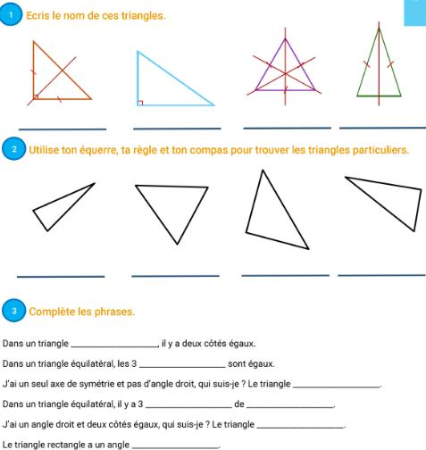

1. Diagnostiquer
EduSoft centralise les informations de classe et met en avant les points d’attention prioritaires.
Le logiciel de suivi pour le Cycle 3 qui s'adapte au rythme de chaque élève en Français et Mathématiques.
"L'outil idéal pour gérer l'hétérogénéité en CM2."
"Enfin une différenciation qui ne me prend pas 3h par soir."
"Mes élèves de 6ème ont repris goût aux maths."
"Le suivi est précis, intuitif et conforme aux programmes."
Déjà adopté dans des établissements francophones (placeholders)
Une base simple pour piloter l’organisation pédagogique avec une logique IA, sans complexité technique.
EduSoft centralise les informations de classe et met en avant les points d’attention prioritaires.
Vous obtenez des propositions de groupes, séquences et objectifs avec des placeholders personnalisables.
Le suivi visuel vous aide à ajuster rapidement les actions pédagogiques en continu.
Visualisez les progrès de chaque élève en un coup d'œil grâce à des tableaux de bord clairs.
L'algorithme propose des exercices basés sur le niveau réel de l'élève (CP au CE2).
Réduisez votre charge de travail administrative et concentrez-vous sur l'accompagnement.
Un aperçu visuel de l’interface: tableaux de bord, suivi des élèves et planning organisationnel.
Les visuels ci-dessous sont des placeholders prêts à être remplacés par vos captures réelles.
Dashboard classe
Planification hebdo
Suivi compétences
Non, l’objectif est de structurer et simplifier ce que vous faites déjà, avec des suggestions IA adaptables.
La version template vise un démarrage rapide avec des placeholders modifiables en quelques minutes.
Oui, la structure présentée couvre les usages cycles 2/3 et début collège avec suivi multi-niveaux.
Oui, vous pouvez démarrer sur une classe pilote puis étendre progressivement à l’établissement.
MDMarie Dupont · CM2 · Paris, France · check_circleAchat vérifié
Note: 5,0 sur 5
Publié le 03/03/2026
Excellent pour différencier sans perdre de temps
"Interface claire, simple à prendre en main même pour une classe hétérogène."

JMJacques Moreau · CE2 · Marseille, France · check_circleAchat vérifié
Note: 4,0 sur 5
Publié le 02/03/2026
Très utile au quotidien
"Le suivi des élèves est bien plus rapide qu'avant, je gagne un temps précieux."
CRClaire Renard · CM1 · Toulouse, France
Note: 5,0 sur 5
Publié le 01/03/2026
Support très utile pour la personnalisation
"Les parcours sont faciles à adapter et les élèves avancent avec plus de confiance."
KBKarim Benali · Sixième · Lyon, France · check_circleAchat vérifié
Note: 4,0 sur 5
Publié le 28/02/2026
Très bon suivi des progrès
"Les tableaux de bord sont clairs et m'aident à préparer mes séances plus vite."
LRLéa Roche · CM1 · Dijon, France
Note: 4,0 sur 5
Publié le 17/02/2026
Très bon outil, quelques détails à peaufiner
"Le suivi des compétences est très utile et globalement fluide, j'aimerais juste quelques options en plus sur les exports."
SMSophie Martin · CE2 · Lille, France · check_circleAchat vérifié
Note: 5,0 sur 5
Publié le 27/02/2026
Un vrai gain de temps en classe
"Je recommande pour la différenciation: rapide à paramétrer et très intuitif."
HRHélène Roussel · Sixième · Nantes, France
Note: 5,0 sur 5
Publié le 26/02/2026
Très pertinent pour le suivi des 6e
"Les indicateurs sont clairs, je repère vite les besoins et je gagne du temps chaque semaine."
SLSteve Lambert · CM1 · Roquefort-la-Bédoule, France
Note: 5,0 sur 5
Publié le 25/02/2026
Excellent outil pour motiver les élèves
"Mes élèves sont plus impliqués et la différenciation est beaucoup plus simple à gérer au quotidien."
NGNora Girard · CM2 · Bordeaux, France · check_circleAchat vérifié
Note: 5,0 sur 5
Publié le 24/02/2026
Très bon accompagnement pédagogique
"Le suivi individualisé est excellent et les parents comprennent mieux les progrès."
ECEmma Caron · CE1 · Bruxelles, Belgique · check_circleAchat vérifié
Note: 5,0 sur 5
Publié le 23/02/2026
Élèves plus engagés dès la 1re semaine
"J'ai vu une vraie progression de motivation sur les activités différenciées."
LPLucas Petit · CM2 · Montpellier, France
Note: 5,0 sur 5
Publié le 22/02/2026
Parfait pour suivre la progression
"La progression est lisible pour moi et motivante pour les élèves."
IBInès Bernard · CE2 · Nice, France · check_circleAchat vérifié
Note: 5,0 sur 5
Publié le 21/02/2026
Simple et efficace
"On comprend vite les fonctionnalités et les adaptations proposées sont pertinentes."
TLThomas Leroy · CM1 · Strasbourg, France
Note: 5,0 sur 5
Publié le 20/02/2026
Très bon outil de pilotage
"Le tableau de bord me permet d'ajuster rapidement mes groupes de besoin."
PDPauline Dubois · CE1 · Rennes, France
Note: 3,0 sur 5
Publié le 19/02/2026
Bon début mais encore des limites
"L'outil est intéressant mais j'aimerais plus d'options de personnalisation."
MLMehdi Laurent · Sixième · Genève, Suisse · check_circleAchat vérifié
Note: 3,0 sur 5
Publié le 18/02/2026
Utile mais prise en main moyenne
"La base est bonne, mais il me faut encore du temps pour l'intégrer à mes habitudes."
CACamille Arnaud · CE1 · Reims, France
Note: 2,0 sur 5
Publié le 17/02/2026
Potentiel intéressant mais trop limité pour ma classe
"Les bases sont là, mais il me manque encore des réglages pour bien gérer mes groupes de niveau."
YDYanis Delorme · Sixième · Grenoble, France
Note: 1,0 sur 5
Publié le 16/02/2026
Pas adapté à mon usage actuel
"Je n'ai pas réussi à intégrer l'outil dans mon organisation cette année, je réessaierai plus tard."